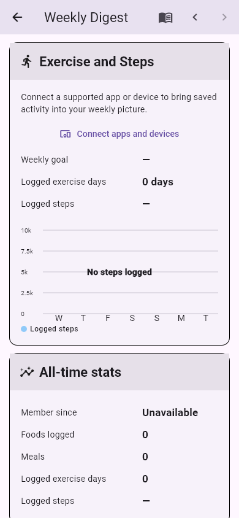
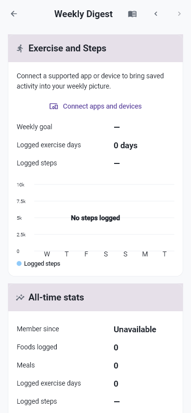
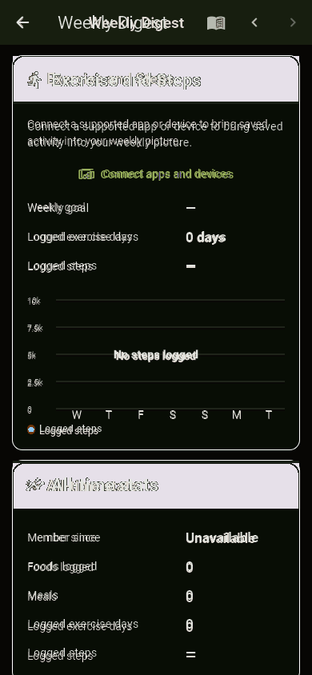
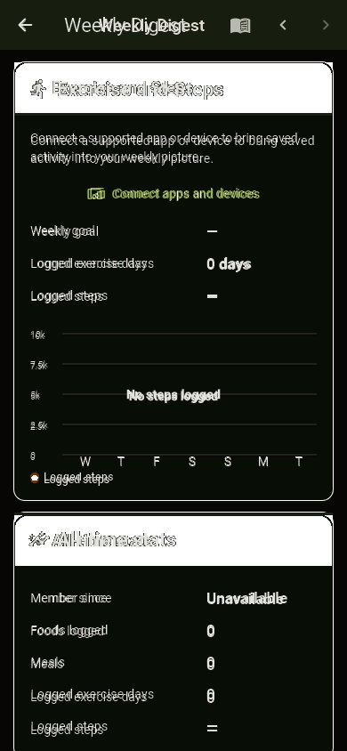

التصنيف المقترح: B. Exercise: نفس noexercise/no steps وصف المصدر، وحدود وترويسة أهدأ ونصوص أصغر؛ All-time section موجود.
RobotoEvidence / BILArabic or NotoArabicEvidence; readable real glyphs
Baseline test/goldens/epic8_weekly_report_exercise_anchor.png, commit 14786b08fa24991ba7445e8c607a993413a840a6
Source: lib/features/analytics/weekly_report_page.dart:488
HOLD RED; main QA approves this exact pair individually. A: replace invalid font evidence only after signoff; B: verify intended source history and approve or reclassify C.
Same pixels as previous failed actual: True. Master unchanged, no approval.



